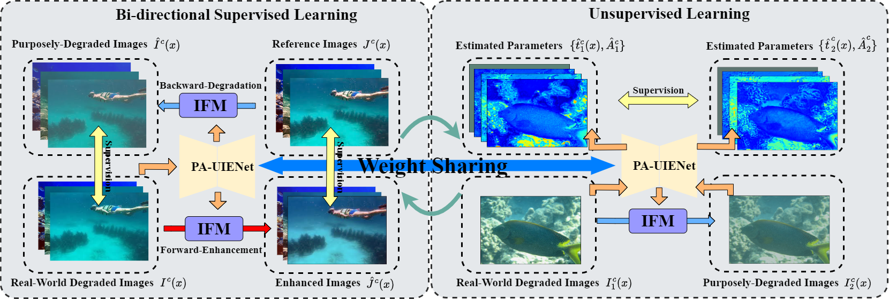
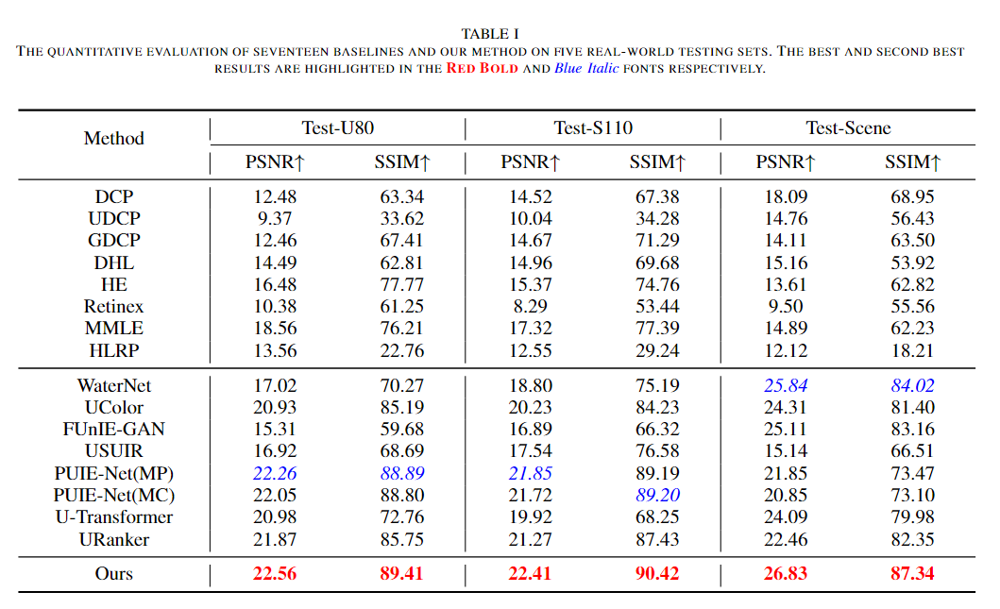
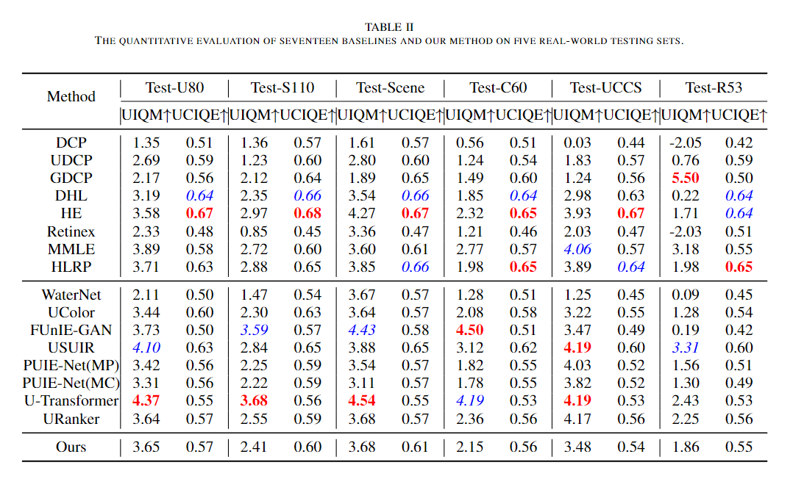
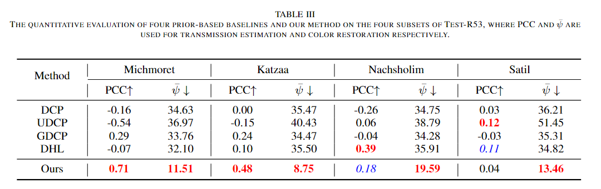
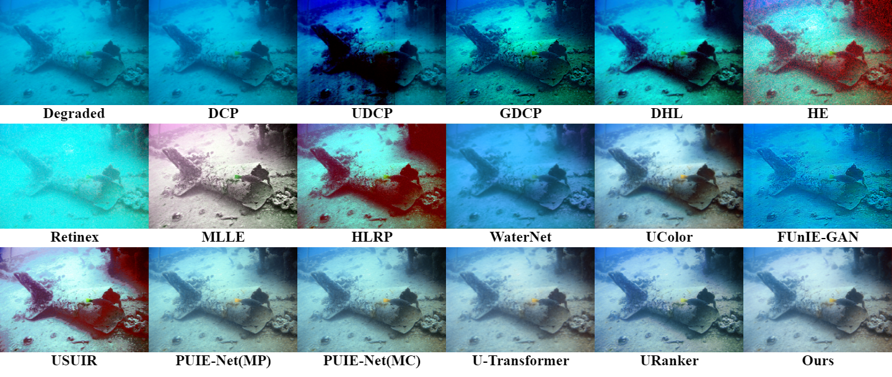
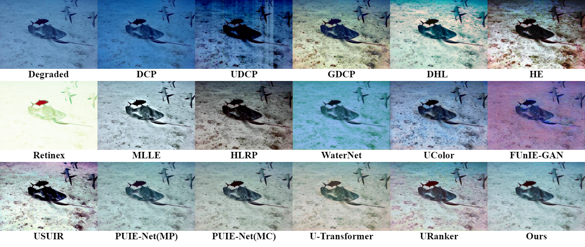
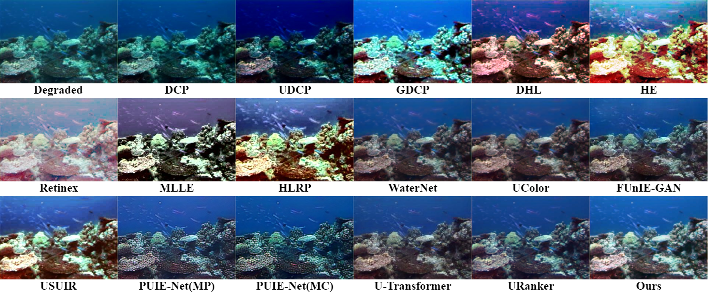
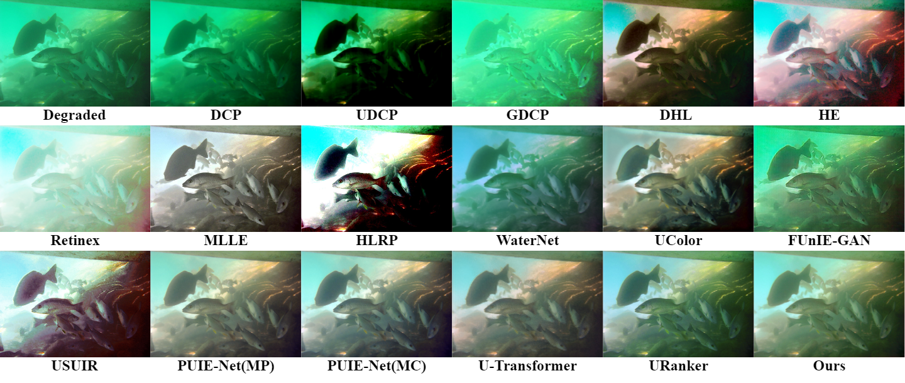
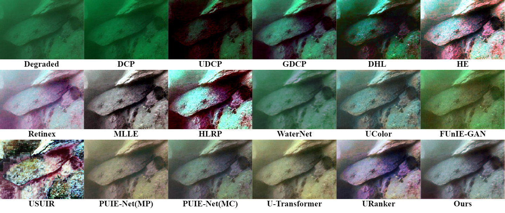
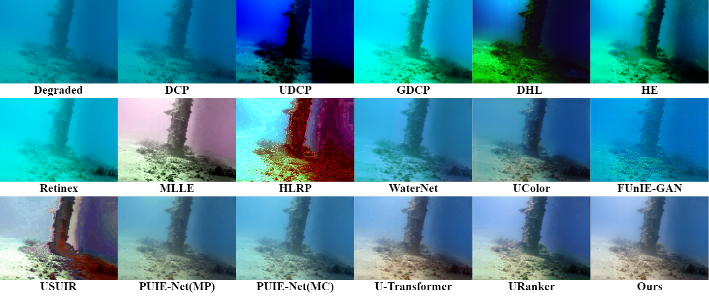

Semi-Supervised Underwater Image Enhancement
Using A Physics-Aware Approach

|
The architecture of the proposed PA-UIENet, which comprises three individual streams: D-Stream, B-Stream and A-Stream, to estimate the degradation parameters of the revised IFM.
Abstract
Underwater images normally suffer from degradation due to the transmission medium of water bodies.
Both traditional prior-based approaches and deep learning-based methods have been used to address this problem.
However, the inflexible assumption of the former often impairs their effectiveness in handling diverse underwater scenes,
while the generalization of the latter to unseen images is usually weakened by insufficient data.
In this study, we leverage both the physics-based underwater Image Formation Model (IFM) and deep learning techniques for Underwater Image Enhancement (UIE).
To this end, we propose a novel Physics-Aware Triple-Stream Underwater Image Enhancement Network,
i.e., PATS-UIENet, which comprises a Direct Signal Transmission Estimation Steam (D-Stream),
a Backscatter Signal Transmission Estimation Steam (B-Stream) and an Ambient Light Estimation Stream (A-Stream).
This network fulfills the UIE task by explicitly estimating the degradation parameters of a revised IFM.
We also adopt an IFM-inspired semi-supervised learning framework, which exploits both the labeled and unlabeled images, to address the issue of insufficient data.
Our method performs better than, or at least comparably to, sixteen baselines across five testing sets in the degradation estimation and UIE tasks.
This should be due to the fact that it not only can model the degradation but also can learn the characteristics of diverse underwater scenes.
Links

IFM-Inspired Semi-Supervised Learning Framework

The proposed semi-supervised learning framework, which comprises a bi-directional supervised learning scheme and an unsupervised learning scheme, used for training our PATS-UIENet.
Experimental Results
|  |
|  |
|  |
Quantitative Results on UIEB, SUIM-E, EUVP and RUIE data sets.
|  |
| |
|  |
| |
|  |
| |
|  |
| |
|  |
| |
|  |
Qualitative Results on Five Real World Underwater Images and A Underwater Image.
Citation
@ARTICLE{
}